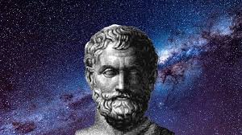

İlk Filozof olarak adlandırdığımız kişi İyonya'nın Milat şehrinde doğan (yani şuan ki Aydın'da doğmuştur) Thalesdir. Kendisinin M.Ö 624-545 yılları arasındayaşadığı ileri sürülür. Rivayete göre kendini Mısır ve Babil kaynaklarıyla eğitmiştir. Thales filozof olduğu kadar aynı zamanda da bir matematikçi olmasıyla bilinir. Filozof olarak tarihe geçmesinin en büuük sebebi ise bir soruya verdiği cevaptır. Maddenin arkesi (kaynağı,özü) nedir, sorusuna "su" cevabını vermiştir. Bu cevap doğru bir yanıt değildir ama bu cevabın onu filozof konumuna getirmesinin nedeni cevabının doğruluğu veya yanlışlığından çok o sonuca nasıl ve hangi yolları izleyerek ulaştığı onu bir filozof yapar. Thales ise gözlemleyerek,sezgileyerek,araştırarak,adım adım mantıksal bir çerceve izleyerek bu sonuca ulaşması onu filozof yapar,cevabın illa doğru olması gerekmez.
